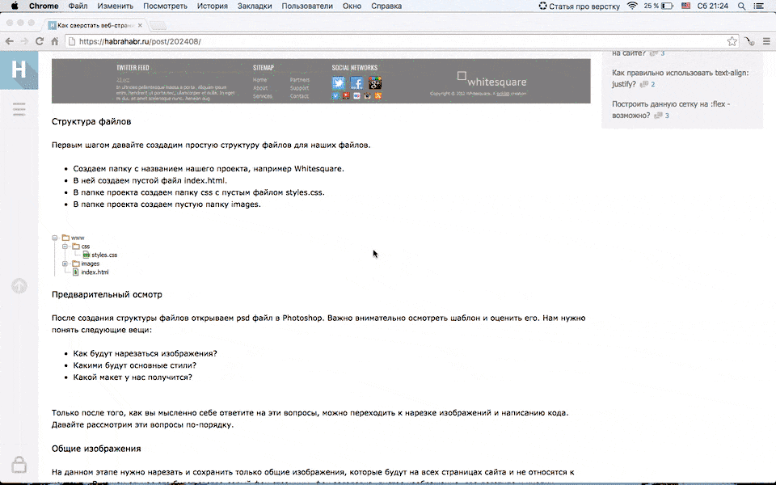

Как работает

Допустим, вы пишете статью о верстке. Создайте папку, в которую будете складывать весь материал. Если откроете файндер, сразу окажетесь в созданной папке.

Копируйте любой текст: из браузера, документа, письма. Текст в формате .md переместится в рабочую папку и откроется любым блокнотом.
Скриншоты автоматически попадут в рабочую папку.

Сохраняйте нужные ссылки в папке проекта. Откроются в любом браузере.

Внезапные идеи и мысли не потеряются — занесите их в заметки, и они сохранятся в рабочей папке. Откроются любым блокнотом.